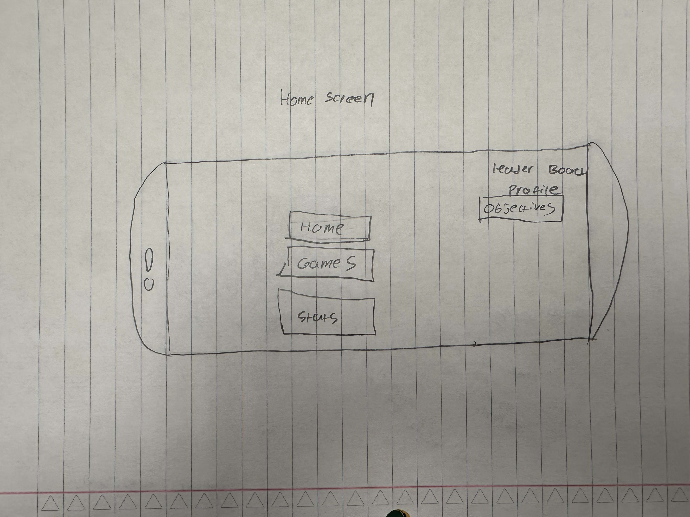
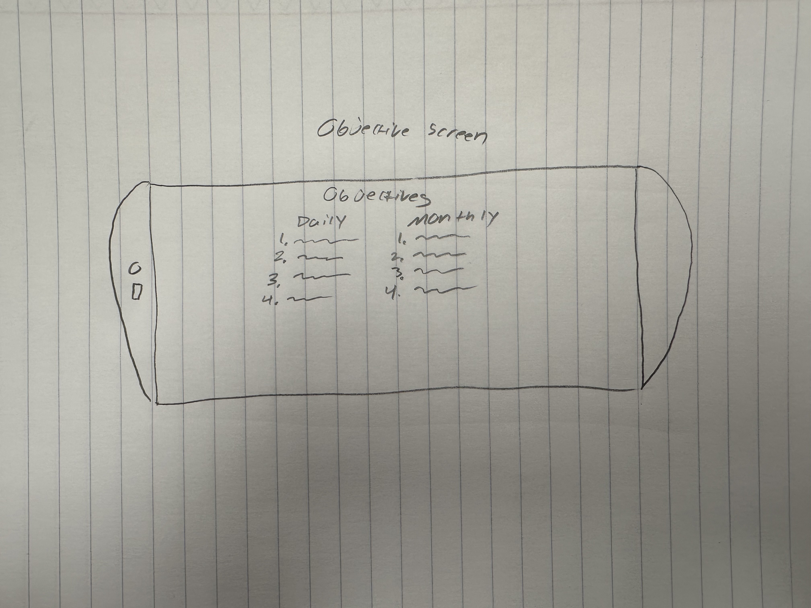
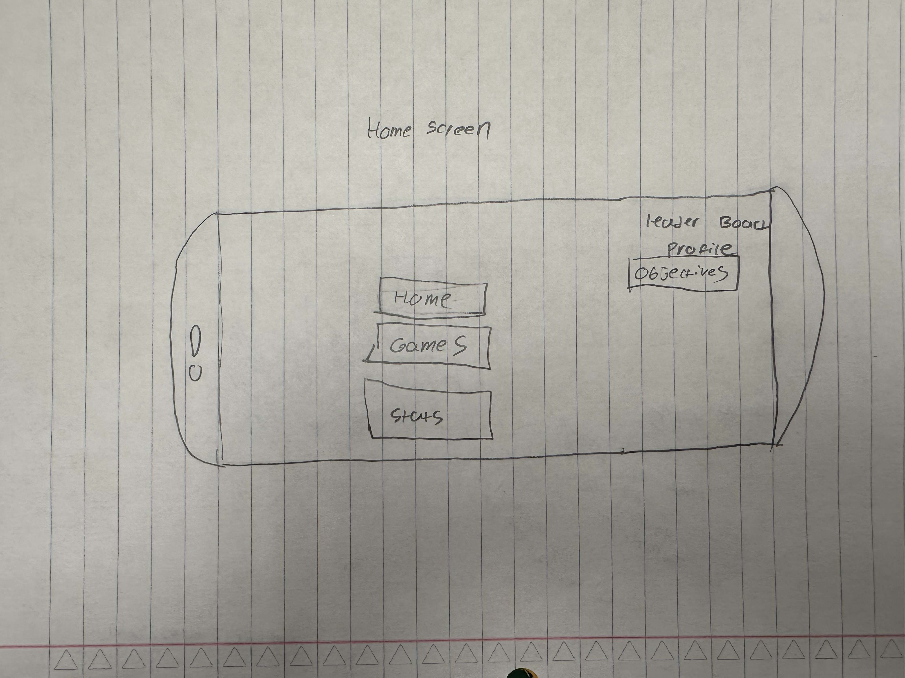
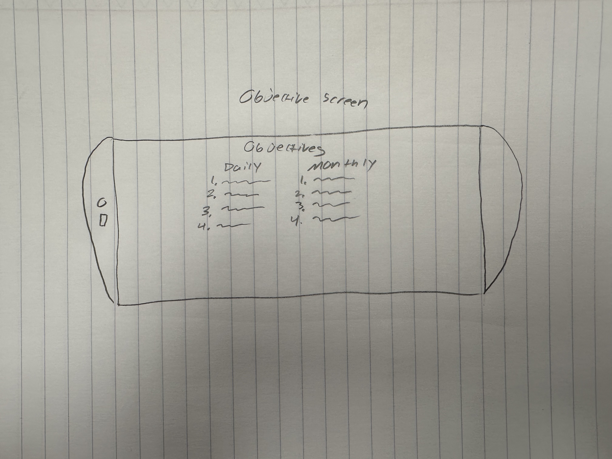

Our project is an Augmented Reality Collaborative experience, built for the purpose of encouraging/incentivizing increased social interaction and community contribution through team-building games and experiences. Smartphone app for an Augmented Reality "playground" implemented in specific predetermined, real world zones, where players can work together or against each other to accomplish goals/complete tasks in various games, but most importantly are forced to interact IN PERSON.The first activity or game created will be a scavenger hunt where a players will be teamed with other players and compete against other teams to complete the hunt the fastest (whether that's within an hour, within a day, or even week depending on the amount of tasks. Players will be tasked with finding both virtual and tangible objects, and sometimes asked to compete in cooperative challenges to successfully check an item off the list (obstacle course, race, etc.). Players would be able to increase in rank/levels, earn collectibles.
ARC is made for everybody, from children who want to make friends or organizations who are trying to build a cohesive community and companies who want to work on team building. We'll begin by zeroing in on Whitworth campus as our first/test environment, using its buildings as notable in-game landmarks and its borders to establish our larger "zone". Our first task will

Large organizations who want to focus on the community aspect of their organization. Schools could also invest as a way to build community aswell.
 


